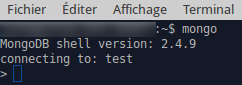

Ouvrir un terminal (console) et taper :
mongo
Vous devriez voir ceci
Vous êtes désormais connecté à la "console mongoDB". Par défaut, mongoDB propose d'utiliser une base de données dénommée "test"
N.B. Si vous n'avez pas la même version de mongoDB, cela n'a pas une grande importance. Si vous voulez quitter la console mongoDB, il suffit de taper "quit()" dans cette même console.
Nous allons créer une nouvelle base de données qui aura pour nom "maDB", dans la console, taper :
use maDB
Vous devriez avoir le message :
switched to db maDB
"use maDB" vous a permis de :
Pour vous assurer que vous êtes bien connecté à la base de données "maDB", vous pouvez taper dans la console :
db
Pour l'instant, "maDB" est vide, nous allons donc créer une nouvelle collection.
N.B. Il est important de comprendre qu'une base de données contient une ou des collection(s) et qu'une collection contient des documents (JSON)
Dans la console mongoDB, après avoir vérifié que vous êtes bien connecté à la base de données maDB, taper :
db.fiches.insert({"nom":"Alvarez","prenom":"Océanne","genre":"F","taille":199,"email":"kalvarezw@hp.com","pays":"Macedonia"})
Vous venez de créer une collection ("fiches"). Vous avez aussi inséré un premier document JSON dans cette collection.
Si nous résumons, nous avons pour l'instant : une base de données "maDB" qui contient une collection "fiches" qui contient un document JSON ({"nom":"Alvarez","prenom":"Océanne",....})
Insérer les deux documents JSON ci-dessous à la collection "fiches"
{"nom":"Hawkins","prenom":"Marie-noël","genre":"M","taille":164,"email":"bhawkinse@reference.com","pays":"Bolivia"}
et
{"nom":"Martin","prenom":"Michelle","genre":"F","taille":164,"email":"mm74@zozo.com","pays":"France"}
N.B. La commande "db.X.insert(Y)" crée une nouvelle collection seulement si la collection X n'existe pas. Si la collection X existe déjà, "db.X.insert(Y)" insère juste le document Y dans la collection X.
N.B. Les documents JSON proposés ont été générés automatiquement et aléatoirement, ne soyez donc pas surpris si les prénoms et les genres ne sont pas en parfaite adéquation.